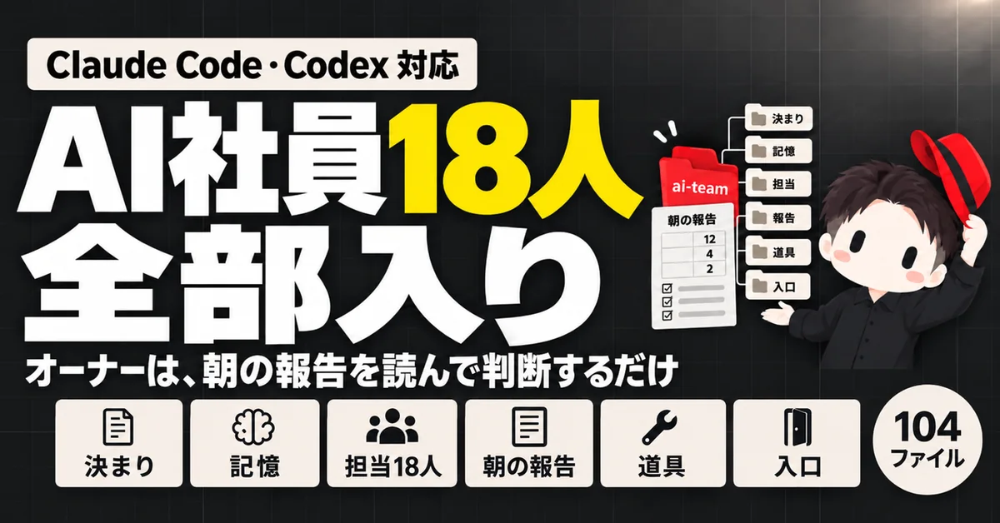
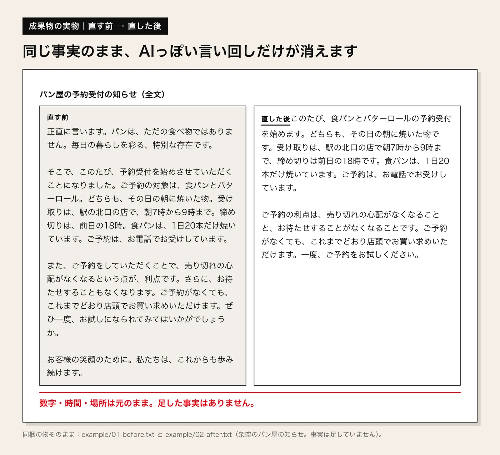

いちばん大きな一式
AI社員一式
会社の仕事を CEO と18の担当に分け、担当ごとの決まりと会社の記憶をファイルで持たせる一式です。
できる事とサンプルを見る
- 価格
- 9,800円（税込）
01 / WHAT YOU CAN MAKE
画像は、各スキルの元になった CHIERO の制作物です。販売中の物は、価格と購入ページを載せています。

いちばん大きな一式
会社の仕事を CEO と18の担当に分け、担当ごとの決まりと会社の記憶をファイルで持たせる一式です。


台本・声・スライド・字幕・サムネを作り、1本の動画に組み上げます。

テキスト教材から話し言葉の台本を作り、スライドと合成音声で講座の動画にします。

質問・タイプ・結果の文を決めて、1枚の HTML の診断ページに組みます。
台本の読み方を指定して合成音声にし、読み間違いを機械で確かめます。
曲の拍に合わせて文字と図形が動く、短い紹介映像を作ります。

02 / SINGLES
AI社員一式の18担当を、1担当ずつ受け取れます。土台は全担当で同じ物で、複数買っても1つで足ります。18担当を単品で全部買うと17,640円です。18担当すべてと土台が入ったセットは、AI社員一式（9,800円・税込）です。
公開ページの題名・説明・見出しなどを監査し、対話型の AI に中立の質問を定点で投げて、自社が答えに出るかを記録する担当です。
03 / BEFORE YOU START